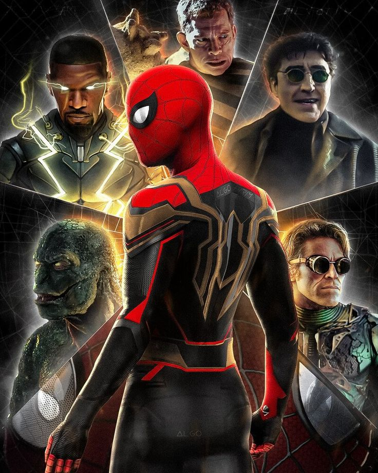
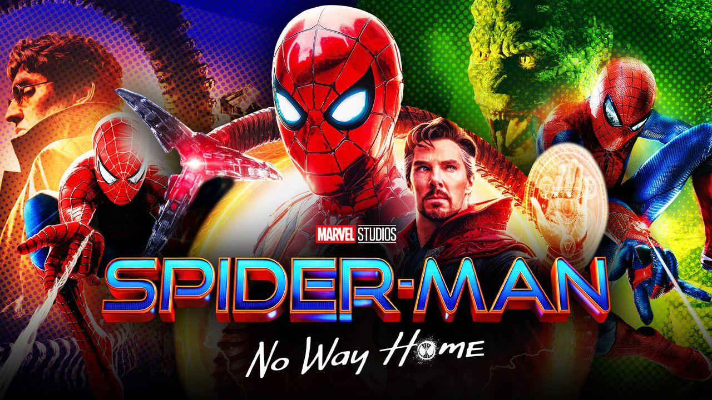

This movie brought everything a Spider-Man movie needs to conclude an origin story. This movie is events after Avengers: Endgame I won't go into detail in case you haven't watched it yet but we start the movie showing Peter Parker (Spider-Man) getting his identity revealed. This movie had the best intro just because how they showed it with J. Jonah Jameson played by no other J.K. Simmons from the Tobey Maguire trilogy which no one can out play his role like he can.
My favorite part is seeing my favorite villains with the same actors like Green Goblin and Doctor Octopus. The main villain is Green Goblin who is trying to get Spider-Man to grow up and stop being afraid to take action in his own hand. He does kill Peters aunt May which is what makes Peter Parker change a new leaf of wanting to help Green Goblin be normal to wanting to kill him. This movie brought both Andrew and Tobey in this film which is just something I wanted for years especially see Tobey again on the big screen. Now when they were introduced the audience was just going crazy as I was because this was moment from all of us growing up watching Tobey as Spider-Man to come back.
The ending fight scene is what made the crowed just stay in silent because the battle between Spider-Man (Tom Holland) and Green Goblin with Tom ready to kill Green Goblin with rage with his own glider just sitting ready to take it because he knows he accomplished his goal. But before he could do it Tobey comes right in the middle looking at Tom holding back the glider with all his stregnth to make Tom not kill. Right after they settle in a shocking matter Green Goblin stabs Tobey with his glider and then throw him to the side and that time I felt everything go slow because I could't believe they just did that.